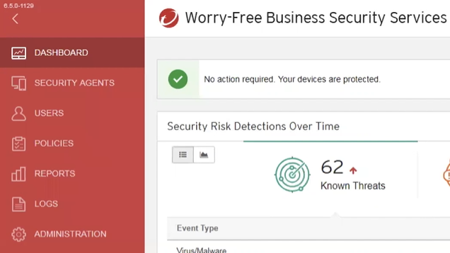

Policy and configuration settings
 
Dashboard
- Anti-virus
-Anti-spaware
- mobile devices comands
- scan servers


Security Agents:


Windows, Mac, OS devices, android


Users:


Policies:
Security Settings:
- General Scan
- Virus Scan
- Spyware/Grayware Scan
- Behavior Monitoring
- HTTPS Web Threat Protection
Agent Control
- Alert
- Security Agent Logs
- Watchdog
-Help Desk Notice
- Uninstallation
- Exit/Unlock

Reports:


Log

Adm